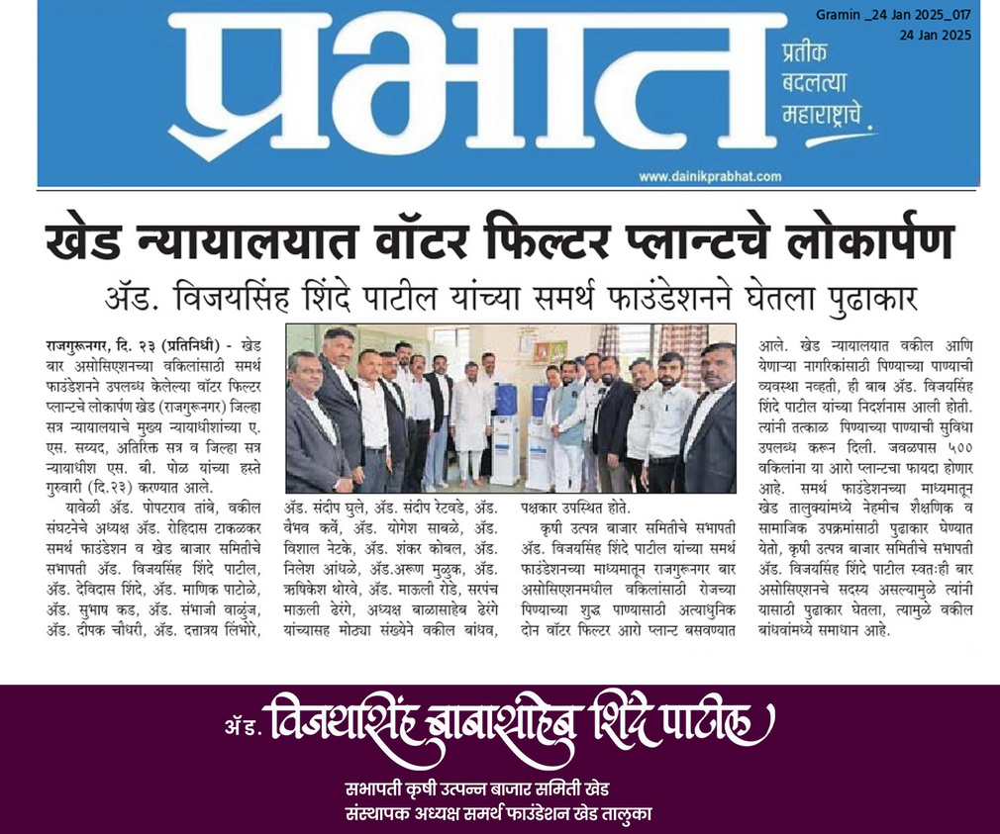
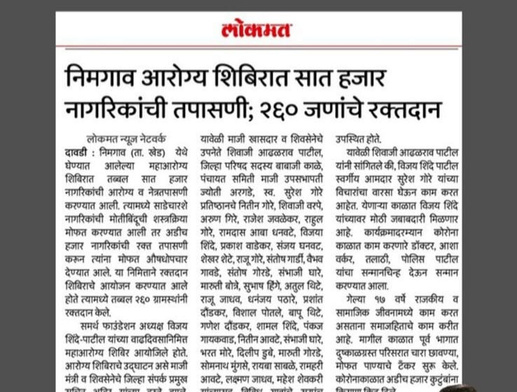

We believe in radical transparency. Every number here is drawn from program records, field reports, and verified beneficiary data.
From our first school bag distribution to Project Samruddhi — every year, a deeper commitment.
Foundation established. First school bag distribution — 200 students across 5 villages receive stationery, bags, and learning materials.
Maha Arogya Shibir inaugural edition — 800 patients receive free specialist consultations across 3 villages in a single-day medical camp.
Ambulance deployed for rural emergency response — 47 emergency trips completed in the first year of operation, bridging villages to the nearest hospitals.
Mahila Asmita Bhavan inaugurated — a dedicated centre for women's empowerment. First 32 women enrolled in vocational tailoring and livelihood skill programs.
COVID-19 emergency response — 7,100 grocery kits distributed across 82 villages in 23 days of continuous field operations during the national lockdown.
Water purification plants installed in Dondkarwadi, Ghogari, and Pabal. 2,400 residents gain access to safe, clean drinking water for the first time.
Solar panels installed in 4 schools, reducing energy costs and enabling evening study hours. Annual Maha Arogya Shibir expands to serve 1,200 patients in a single event.
Animal welfare program expanded — 3 veterinary camps conducted, 500+ animals treated. Tree plantation drive plants 1,200 saplings across the Khed Taluka region.
Arogya Sewika program launched — 50 community health workers trained, equipped with tablets and field kits, and deployed across all 21 villages for preventive healthcare outreach.
Project Samruddhi commences — a ₹1.25 Crore, three-year integrated development initiative spanning 10 villages, covering health, education, livelihoods, and infrastructure.
Shri Samarth Foundation's programs align with 6 United Nations Sustainable Development Goals.
ProgramsFree specialist health camps (Maha Arogya Shibir), Arogya Sewika community health workers, ambulance emergency response, preventive health screenings in 21 villages.
ProgramsAnnual school bag & stationery drives, digital device distribution, solar electrification of rural schools, digital literacy workshops for students and teachers.
ProgramsMahila Asmita Bhavan vocational centre, women's health camps, tailoring & livelihood training, Bachat Gat (self-help group) linkages for financial independence.
ProgramsRO water purification plant installation, emergency water tanker supply during drought, hygiene awareness campaigns in schools and village panchayats.
ProgramsAnnual tree plantation drives (1,200+ saplings), veterinary camps for livestock and stray animals, biodiversity and conservation awareness programs in schools.
ProgramsCrisis grocery relief (7,100+ families served), skill development and livelihood training, emergency food distribution during natural disasters and community emergencies.
Our programs have been covered in regional Marathi media, validating impact on the ground.


Registered under Maharashtra Public Trusts Act, 1950. Reg. No. F48181/Pune.
Activity reports filed annually with the Charity Commissioner, Pune — every year, on record.
Accounts audited each year by an independent Chartered Accountant. Financials available on request.
We welcome donor site visits during program activities. See the work firsthand, in the field.
Nine years of numbers represent thousands of individual lives changed. Your support writes the next milestone.